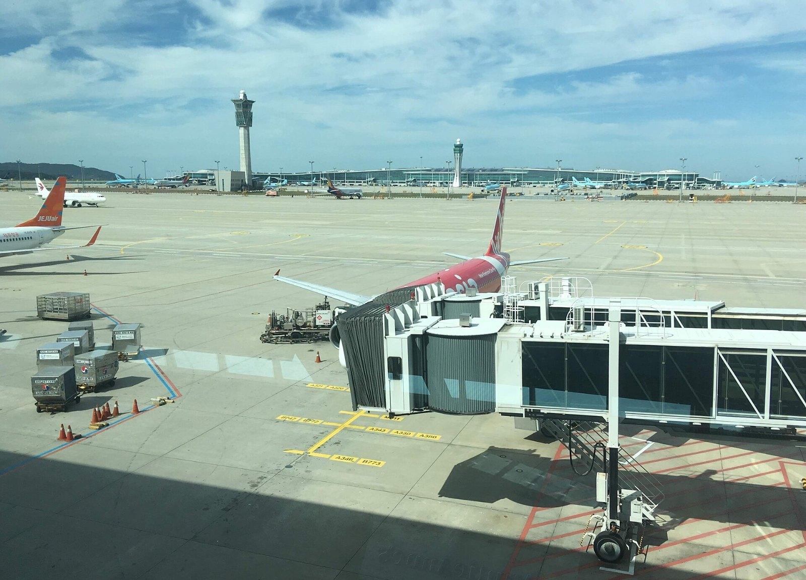
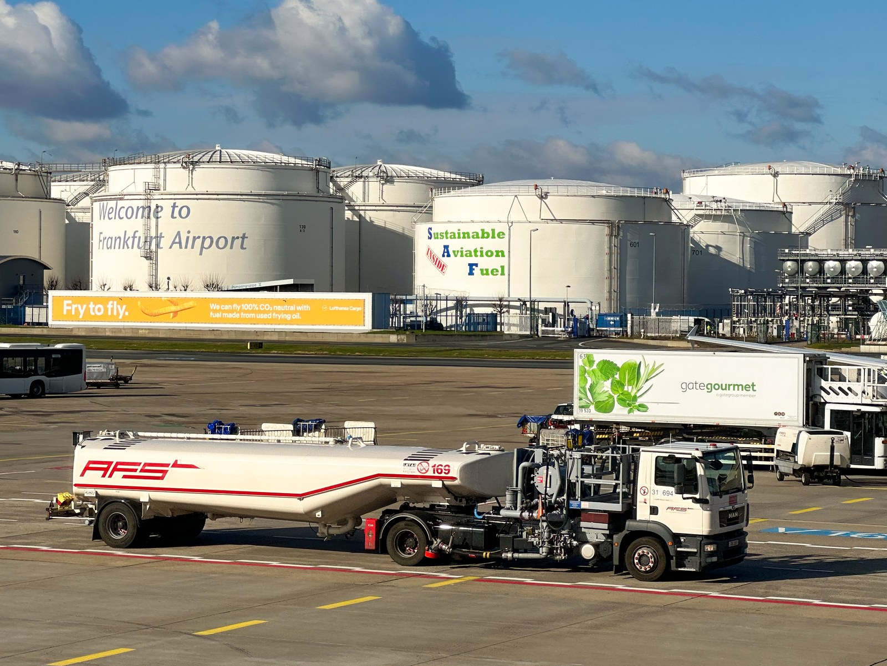
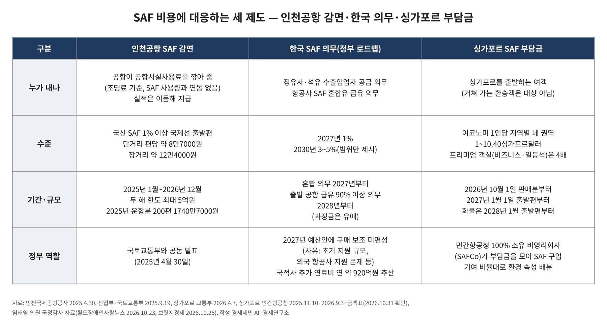

[글로벌 인천공항⑯] SAF 감면 200편 1740만원, 구매비 지원은 예산안 밖
감면액, SAF 사용량 아닌 조명료에 연동
싱가포르 SAF 부담금, 환승객 제외 출발 여객만
구매비 직접 지원 예산 미편성, 외국 항공사 지원 문제도 사유
AI경제저널=김갑봉 기자 | 인천국제공항공사가 2025년 운항분 200편에 집행한 SAF 인센티브 감면액은 1740만7000원이다. 염태영 의원이 받은 국정감사 자료에 나온 수치로, 편당 평균 약 8만7000원이다.
공사는 지난해 4월 30일 국토교통부와 함께 지속가능항공유(SAF, 폐식용유 등으로 만든 항공유) 인센티브를 시행한다고 밝혔다. 아시아 공항 가운데 처음이라고 설명했다.
국산 SAF를 1% 이상 섞은 국제선 출발편에 공항시설사용료를 깎아 준다. 단거리는 편당 약 8만7000원, 장거리는 약 12만4000원이다. 한도는 두 해 최대 5억원이다.
같은 자료를 보면 감면액은 SAF 구매량이 아니라 공항시설사용료 가운데 조명료(공항 조명시설 사용료)에 연동돼 있다. 감면 대상기간은 올해 12월 끝난다. 정부 로드맵은 2027년부터 이 감면을 직접 보조금으로 바꾸는 방안을 검토하겠다고 했다.

감면 첫해 1740만원, 구매비 직접 지원 예산 미편성
정부가 2025년 9월 19일 낸 SAF 로드맵은 2027년부터 국내 공항 국제선 항공유에 SAF를 1% 섞는 의무를 두겠다고 했다. 공급 의무는 정유사와 석유 수출입업자가 진다. 다만 혼합의무 과징금은 일정 기간 유예한다.
2028년부터는 국내 출발 국제선이 연간 급유량의 90% 이상을 출발 공항에서 SAF 혼합유로 넣어야 한다. 급유의무 과징금은 1년 유예한다.

국토교통부는 2027년 국적항공사 국제선에 SAF 1%를 섞으면 연료비가 연 약 920억원(2024년 가격 기준) 늘어난다고 추산했다. 국제선 예상 항공유 수요 460만톤의 1%인 4만6000톤에 톤당 가격 차이 200만원을 곱한 값이다.
국토부는 초기 지원 규모와 외국 항공사 지원 문제 등을 이유로 들어 2027년 예산안에 SAF 구매 보조를 넣지 않았다. 예산에는 이행관리시스템 구축비 10억원과 연구용역비 6000만원이 담겼다. 2030년 국내선 대상 약 20억원 지원안은 확정되지 않았다.
2030년 의무비율은 올해 정하기로 했으나 3~5% 범위만 제시돼 있다. 박희승 의원은 10월 22일 국정감사에서 전용 설비 1기에 약 1조원이 들고 짓는 데 3~4년이 걸린다며 확정을 서두르라고 요구했다.
싱가포르는 환승객 빼고 출발 여객에게
싱가포르 민간항공청은 지난해 11월 10일 SAF 부담금 금액과 시행 시기를 발표했다. 부담금은 싱가포르를 출발하는 여객이 내고 거쳐 가는 환승객은 대상이 아니다. 걷은 돈은 SAF 기금에서 SAF를 사는 데 쓴다.
이코노미석 부담금은 목적지 지역별 네 권역에 따라 1~10.40싱가포르달러(10월 23일 기준 약 1000~1만1000원)다. 방콕·도쿄·런던·뉴욕행이 1·2.80·6.40·10.40싱가포르달러다. 프리미엄 객실(비즈니스·일등석)은 4배다.
싱가포르 교통부는 올해 4월 7일 의회 서면 답변에서 중동 분쟁이 항공사와 승객에 주는 충격을 들어 일정을 늦춘다고 밝혔다. 판매 시점은 4월에서 10월로 반년, 출발 시점은 10월에서 내년 1월로 석 달 늦췄다. 민간항공청은 9월 3일 화물을 2028년 1월 출발편부터 물린다고 밝혔다.
민간항공청이 100% 소유한 비영리회사 SAFCo가 부담금 징수와 SAF 조달을 맡는다. 첫 SAF 인도는 2027년 중반으로 예상된다. 환경 속성(감축 효과를 나타내는 값)은 부담금 총액의 0.01% 이상을 낸 운영사에 기여 비율대로 나눠 준다.
국제항공운송협회(IATA)는 6월 6일 올해 세계 SAF 생산량을 약 240만톤으로 내다봤다. 항공유 사용량의 0.8%다. 항공사 비용은 43억달러(10월 23일 기준 약 5조7000억원)로 추산했다. IATA는 의무를 도입하기 전에 생산 인센티브와 투자 틀부터 갖추라고 각국에 요구했다.

연구가 본 비용 분담과 탄소 누출
국제청정교통위원회(ICCT)는 7월 14일 보고서에서 유럽 배출권거래제를 유럽 밖 국제선으로 넓히는 설계 10가지를 따졌다. 범위 안 배출량 중 밖으로 새는 몫인 탄소 누출은 출발·도착편을 모두 담은 가장 넓은 설계에서 3.1%였다. 밀려난 교통량은 대부분 이스탄불·두바이·도하가 흡수했다.
유럽연합 집행위원회는 7월 17일 개편안을 냈다. 유럽연합 공항을 출발해 프랑크푸르트공항에서 5000km 안 공항에 도착하는 국제선을 2029년부터 배출권거래제에 포함하는 안이다. ICCT는 이 안이 모형의 설계보다 좁아 탄소 누출이 거의 없다고 덧붙였다.
홍콩이공대 등 연구진은 올해 4월호 국제학술지에 모형 분석을 실었다. 모형에서 여러 공항을 묶어 SAF 의무를 평균으로 채우게 하면 비용이 내려가고 교통량이 늘었다. 혜택은 생산시설 가까운 공항과 항공사에 쏠리고, 외딴 작은 공항은 교통량을 잃을 수 있다고 밝혔다.
공항별 감면 차이, 부처별 수요 추정
인천공항은 200편에 1740만7000원으로 편당 평균 약 8만7000원이고, 한국공항공사는 51편에 288만7868원으로 편당 평균 약 5만7000원이다.
산업부는 외국 항공사를 포함한 2027년 SAF 수요를 약 7만1000톤으로 추정했다. 국토부가 920억원을 셈한 물량은 4만6000톤이다.
염태영 의원이 받은 산업부 자료에는 정유사별 공급 가능 물량과 공급 일정이 담기지 않았다. 국토부는 산업부와 공동 점검 결과를 내라는 요구에 추진 중인 것으로 안다고 답했다. 염태영 의원은 부처가 구체적 실행안을 내놓아야 한다고 밝혔다.
참고문헌
기관 자료
- 인천국제공항공사, 「인천공항공사, 지속가능항공유(SAF) 사용 확대를 위한 기념행사 개최」(보도자료), 2024년 8월 30일. https://www.airport.kr/bbs/co_ko/84/132083/artclView.do
- 인천국제공항공사, 「인천공항공사, 아시아 최초로 지속가능항공유(SAF) 인센티브 시행」(보도자료), 2025년 4월 30일. https://www.airport.kr/bbs/co_ko/84/138701/artclView.do
- 산업통상부(발표 당시 산업통상자원부)·국토교통부, 「국내 출발 항공편, 2027년부터 지속가능항공유(SAF)로 날아오른다」(보도자료), 2025년 9월 19일. https://www.motir.go.kr/kor/article/ATCL3f49a5a8c/170934/view
- 국제항공운송협회(IATA), "SAF Production Volumes Still Disappointing", 2026년 6월 6일. https://www.iata.org/en/pressroom/2026-releases/06-06-saf-production-volumes-still-disappointing/
- 싱가포르 교통부, "Adjusting Implementation Timeline of Sustainable Aviation Fuel Levy to Mitigate Cost Pressures on Airlines and Passengers"(의회 서면 답변), 2026년 4월 7일. https://www.mot.gov.sg/news-resources/newsroom/adjusting-implementation-timeline-of-sustainable-aviation-fuel-levy-to-mitigate-cost-pressures-on-airlines-and-passengers/
- 싱가포르 민간항공청(CAAS), "New Sustainable Aviation Fuel Levy to Apply from 1 April 2026 for Flights Departing from 1 October 2026"(보도자료), 2025년 11월 10일. https://www.caas.gov.sg/resources/media-and-publication/newsroom/new-sustainable-aviation-fuel-levy-to-apply-from-1-april-2026-for-flights-departing-from-1-october-2026/
- 싱가포르 민간항공청(CAAS), "CAAS to Start Sustainable Aviation Fuel Levy for Origin-Destination Passengers, General and Business Aviation Flights from 1 October 2026 for Flights Departing from 1 January 2027", 2026년 9월 3일. https://www.caas.gov.sg/resources/media-and-publication/newsroom/caas-to-start-sustainable-aviation-fuel-levy-for-origin-destination-passengers-from-1-october-2026-for-flights-departing-from-1-january-2027/
- 싱가포르 민간항공청(CAAS), "Airline Domain Sustainability Initiatives"(SAF 부담금 금액표), 2026년 10월 31일 확인. https://www.caas.gov.sg/sustainability/airline-domain-sustainability-initiatives/
- 유럽연합 집행위원회, 「Reducing emissions from aviation」(기후행동총국 누리집, 2026년 7월 17일 배출권거래제 개편안 제출 안내). https://climate.ec.europa.eu/areas-action/transport-decarbonisation/reducing-emissions-aviation_en
- 유럽연합 이사회, 환경작업반 설명 자료 「ETS Package」(집행위 발표 슬라이드, 2026년 7월 20일 회의), 문서번호 WK 10833/2026. https://data.consilium.europa.eu/doc/document/WK-10833-2026-INIT/en/pdf
연구 논문
- Hu, R., Zhao, B., Chen, R., Jiang, C., & Xiao, Y., "How to promote sustainable aviation fuel: Is flexibility beneficial to quota policies?", 『Transportation Research Part B: Methodological』 206, 2026년 4월, 103426(초록 확인). https://doi.org/10.1016/j.trb.2026.103426
- Zheng, S., Fan, K., Rhode, D., & Pavlenko, N., "Aviation carbon leakage risks under an expanded EU Emissions Trading System", 국제청정교통위원회(ICCT) 보고서, 2026년 7월 14일. https://theicct.org/publication/aviation-carbon-leakage-risks-under-an-expanded-eu-emissions-trading-system-jul26/
[사진 출처]
- [사진1] Christophe95, "Incheon International Airport Air Traffic Control tower and terminal 2.jpg", 위키미디어 공용, 2018년 10월 8일 촬영, CC BY-SA 4.0. https://commons.wikimedia.org/wiki/File:Incheon_International_Airport_Air_Traffic_Control_tower_and_terminal_2.jpg
- [사진2] Ubahnverleih, "Sustainable Aviation Fuel advertisment at frankfurt airport.jpg", 위키미디어 공용, 2023년 2월 6일 촬영, CC0. https://commons.wikimedia.org/wiki/File:Sustainable_Aviation_Fuel_advertisment_at_frankfurt_airport.jpg
- [도표1] 경세제민 AI·경제 연구소 작성. 자료는 위 인천국제공항공사 2025년 4월 30일 보도자료, 산업통상부·국토교통부 2025년 9월 19일 보도자료, 싱가포르 교통부 2026년 4월 7일 답변, 싱가포르 민간항공청 2025년 11월 10일·2026년 9월 3일 발표와 금액표, 월드장애인사랑뉴스·투데이안 2026년 10월 23일, 브릿지경제 2026년 10월 25일 보도
관련기사
- [글로벌 인천공항⑮] 해외 항공기 4001대 들인 샤먼, 인천공항 정비도 남의 물량으로
- [글로벌 인천공항⑭] 한중 노선 국적사 몫 54%→46%, 베이징·상하이 늘려야
- [글로벌 인천공항⑬] 인천공항 44% 외국인, 연말 끝나는 비자 특례 상설로
- 착륙료 10년·계류장 25년 묶은 인천공항, 싼 값이 항공사를 붙잡는가
저작권자 © AI경제저널 무단전재 및 재배포, AI학습 및 활용 금지